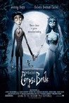
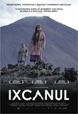
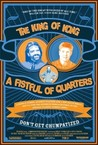
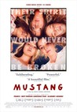

Movie Releases By Score

|
701.
Juliet of the Spirits (re-release)
Release Date:
May 18, 2001
This 1965 Fellini classic is a symbolic, surreal tale of a middle-aged Roman housewife who suspects her husband of cheating.
|


|
702.
Corpse Bride
Release Date:
September 16, 2005

Set in a 19th century European village, this stop-motion, animated features follows the story of Victor (Depp), a young man who is whisked away to the underworld and wed to a mysterious Corpse Bride (Bonham-Carter), while his real bride waits bereft in the land of the living. (Warner Bros.)
|

|
703.
Project Nim
Release Date:
July 8, 2011
From the Academy Award winning team behind Man on Wire comes the story of Nim, a chimpanzee who in the 1970s became the focus of a landmark experiment which aimed to show that an ape could learn to communicate with language if raised and nurtured like a human child. What was learned about his true nature – and indeed our own – is comic, revealing and profoundly unsettling. (Roadside Attractions)
|

|
704.
The Wind Rises
Release Date:
November 8, 2013

Jiro—inspired by the famous Italian aeronautical designer Caproni—dreams of flying and designing beautiful airplanes. Nearsighted from a young age and thus unable to become a pilot, Jiro joins the aircraft division of a major Japanese engineering company in 1927. His genius is soon recognized, and he grows to become one of the world’s most accomplished airplane designers. The film chronicles much of his life, and depicts key historical events that deeply affected the course of Jiro’s life, including the Great Kanto Earthquake of 1923, the Great Depression, the tuberculosis epidemic and Japan’s plunge into war. He meets and falls in love with Nahoko, and grows and cherishes his friendship with his colleague Honjo. A tremendous innovator, Jiro leads the aviation world into the future. Miyazaki pays tribute to engineer Jiro Horikoshi and author Tatsuo Hori in his creation of the fictional character Jiro—the center of the epic tale of love, perseverance, and the challenges of living and making choices in a turbulent world.
|

|
705.
Neil Young Trunk Show
Release Date:
March 19, 2010
Trunk Show: a traveling display of unique goods, packed and unpacked along the way. Neil Young Trunk Show: Jonathan Demme's display of Neil Young's musical and spiritual soul. Young on a stage full of personal icons; alone in the center of a circle of his beloved acoustic guitars; in the midst of stellar musicians Ben Keith, Ralph Molina, Rick Rosas, Pegi Young and Anthony "Sweet Pea" Crawford, plus an onstage painter portrayed by Eric Johnson. There are delicately offered acoustic numbers like "Sad Movies" and "Mexico"; mesmerizing electric travelogues into the artist's psyche ("No Hidden Path"); searing, chaotic anthems including "Like a Hurricane" and "Cinammon Girl"; and rarely performed pieces like "Kansas" and "Ambulance Blues" that provide glimpses of Young's less public persona. Shot with a mix of video and film cameras, mostly handheld, NYTS presents the kinetic reality of a Neil Young performance in breathtakingly intimate fashion. Young and his band are captured with great immediacy, often in dramatically long takes that let the viewer experience Young opening up his heart song by song, and then blowing it all away in heated, uninhibited displays of rock and roll power. (Fortissimo Films)
|

|
706.
Spider-Man 2
Release Date:
June 30, 2004
In the second installment in the Spider-Man series, based on the classic Marvel Comics hero, Tobey Maguire returns as the mild-mannered Peter Parker, who is juggling the delicate balance of his dual life as a college student and a superhuman crime fighter. The entertaining adventure escalates and Spider-Man's life becomes even more complicated when he confronts a new nemesis, the brilliant Otto Octavius, (Molina) who has been reincarnated as the maniacal and multi-tentacled "Doc Ock." (Sony)
|

|
707.
20 Feet from Stardom
Release Date:
June 14, 2013
Backup singers live in a world that lies just beyond the spotlight. Their voices bring harmony to the biggest bands in popular music, but we've had no idea who these singers are, until now.
|

|
708.
When We Were Kings
Release Date:
October 25, 1996
An unforgettable account of the "Rumble in the Jungle," this Oscar-winning film captures all the magic of Muhammad Ali at the peak of his triumphant career. (Universal)
|

|
709.
Kurt Cobain: Montage of Heck
Release Date:
April 24, 2015
This authorized documentary traces Cobain's life from his early days in Aberdeen, Washington to his success with the grunge band Nirvana.
|

|
710.
20th Century Women
Release Date:
December 28, 2016

Set in Santa Barbara, 20th Century Women follows Dorothea Fields (Annette Bening), a determined single mother in her mid-50s who is raising her adolescent son, Jamie (Lucas Jade Zumann) at a moment brimming with cultural change and rebellion. Dorothea enlists the help of two younger women in Jamie’s upbringing — via Abbie (Greta Gerwig), a free-spirited punk artist living as a boarder in the Fields’ home, and Julie (Elle Fanning), a savvy and provocative teenage neighbor. 20th Century Women is a poignant love letter to the people who raise us – and the times that form us – as this makeshift family forges fragile connections that will mystify and inspire them through their lives. [A24]
|

|
711.
My Name Is Albert Ayler
Release Date:
November 8, 2007
The prophetic free jazz saxophonist Albert Ayler, who today is seen as one of the most important innovators in jazz, was obsessed with his radical music and by the thought that people one day would understand it. In 1962 he recorded his first album in Sweden. Eight years later he was found dead in New York’s East River, aged 34. My Name Is Albert Ayler follows the trail of Albert from his native Cleveland by way of Sweden to New York, meeting family, friends, and close colleagues.
|

|
712.
Paranoid Park
Release Date:
March 7, 2008
An unsolved murder at Portland's infamous Paranoid Park brings detectives to a local high school, propelling a young skater into a moral odyssey in which he must not only deal with the pain and disconnect of adolescence but also the consequences of his own actions. As director of "My Own Private Idaho", "Good Will Hunting", "To Die For", and "Elephant", Gus Van Sant has created some of the most memorable works about youth ever committed to film. At the 2007 Cannes Film Festival, he was awarded the 60th Anniversary Prize for Paranoid Park, which is largely considered one of his finest films. (IFC First Take)
|

|
713.
Pina
Release Date:
December 23, 2011
In his exhilarating new film, German master Wim Wenders (Wings of Desire, The Buena Vista Social Club) shoots in 3D to capture the brilliantly inventive dance world of legendary choreographer Pina Bausch. Wenders had conceived with Bausch a dance film like none seen before, one which would take the fullest advantage yet of new 3D technology to put the viewer deep inside Bausch’s playful, thrillingly unpredictable pieces. After her untimely death in 2009, Wenders continued with the project, turning it into the most exciting tribute he could imagine. Sensual and visually stunning, PINA uses 3D to remarkable effect, taking the audience into Bausch’s work in her imaginative sets (a gliding monorail, a bare stage covered with chairs, a towering man-made waterfall) and powerfully rendering the beauty and sheer physicality of the dances and dancers of her Tanztheater Wuppertal ensemble. (Sundance Selects)
|

|
714.
Animal Kingdom
Release Date:
August 13, 2010
Tells the story of seventeen year-old J (Josh) as he navigates his survival amongst an explosive criminal family and the detective who thinks he can save him.
|

|
715.
La Camioneta: The Journey of One American School Bus
Release Date:
May 31, 2013
Every day dozens of decommissioned school buses leave the United States on a southward migration that carries them to Guatemala, where they are repaired, repainted, and resurrected as the brightly-colored camionetas that bring the vast majority of Guatemalans to work each day. Since 2006, nearly 1,000 camioneta drivers and fare-collectors have been murdered for either refusing or being unable to pay the extortion money demanded by local Guatemalan gangs. La Camioneta follows one such bus on its transformative journey: a journey between North and South, between life and death, and through an unfolding collection of moments, people, and places that serve to quietly remind us of the interconnected worlds in which we live.
|

|
716.
Bullitt
Release Date:
October 17, 1968
An all guts, no glory San Francisco cop becomes determined to find the underworld kingpin that killed the witness in his protection.
|

|
717.
Hugo
Release Date:
November 23, 2011
Based on Brian Selznick's captivating and imaginative New York Times bestseller "The Invention of Hugo Cabret." Hugo Cabret, Scorsese's first film shot in 3D, tells the tale of an orphan boy living a secret life in the walls of a Paris train station. When Hugo encounters a broken machine, an eccentric girl, and the cold, reserved man who runs the toy shop, he is caught up in a magical, mysterious adventure that could put all of his secrets in jeopardy. (Sony Pictures)
|

|
718.
Captain Phillips
Release Date:
October 11, 2013
The true story of Captain Richard Phillips and the 2009 hijacking by Somali pirates of the US-flagged MV Maersk Alabama, the first American cargo ship to be hijacked in two hundred years.
|

|
719.
The LEGO Movie
Release Date:
February 7, 2014
An ordinary LEGO minifigure, mistakenly thought to be the extraordinary MasterBuilder, is recruited to join a quest to stop an evil LEGO tyrant from gluing the universe together.
|

|
720.
Gloria
Release Date:
January 24, 2014
Gloria is a "woman of a certain age" but still feels young. Though lonely, she makes the best of her situation and fills her nights seeking love at social dance clubs for single adults. Her fragile happiness changes the day she meets Rodolfo. Their intense passion, to which Gloria gives her all, leaves her vacillating between hope and despair—until she uncovers a new strength and realizes that, in her golden years, she can shine brighter than ever.
|
|

|
721.
Ixcanul
Release Date:
August 19, 2016
Maria, a 17 year old Mayan woman, lives on the slopes of an active volcano in Guatemala. An arranged marriage awaits her. Although Maria dreams of seeing the city, her status as an indigenous woman does not allow her to go out into that modern world. Later, during a pregnancy complication, this modern world will save her life, but at what price.
|

|
722.
The Selfish Giant
Release Date:
December 20, 2013
Two teenage best friends, Arbor (Conner Chapman) and Swifty (Shaun Thomas), work for a scrap dealer in Bradford, England.
|

|
723.
The Day He Arrives
Release Date:
April 20, 2012
A film director who no longer makes films, Seongjun, arrives in Seoul to meet a close friend. When the friend doesn't show up, Seongjun wanders the city aimlessly. He runs into an actress he used to know, shares a drink with some film students and against his better judgment, heads to his ex-girlfriend's apartment. The next day goes very much like the last; Seongjun meets the actress, has drinks with friends, and falls for woman who looks remarkably like his ex-girlfriend. Each new day plays out like a flimsy copy of the previous one, but only Seongjun knows why. Infused with a playfulness and dry wit that recalls the films of Woody Allen and Eric Rohmer, The Day He Arrives is a delightful meditation on relationships, filmmaking, and the unknowable forces that govern our lives. [The Cinema Guild]
|

|
724.
Hadewijch
Release Date:
December 24, 2010
Hadewijch, a novice nun, shocks the mother superior of her convent with her ecstatic blind faith, and is kicked out of the order. Hadewijch becomes Celine again, a young Parisian girl and daughter of a diplomat, and is led down dangerous paths in the real world, balancing between grace and madness in her rage and passionate love for God. (IFC Films)
|
725.
Taxidermia
Release Date:
August 14, 2009
Taxidermia contains three generational stories, about a grandfather, a father, and a son, linked together by recurring motifs. The dim grandfather, an orderly during World War Two, lives in his bizarre fantasies; he desires love. The huge father seeks success as a top athlete — a speed eater — in the post-war pro-Soviet era. The grandson, a meek, small-boned taxidermist, yearns for something greater: immortality. He wants to create the most perfect work of art of all time by stuffing his own torso. (Regent Releasing)
|
|

|
726.
Drag Me to Hell
Release Date:
May 29, 2009
Christine Brown is an ambitious L.A. loan officer. Life is good until the mysterious Mrs. Ganush arrives at the bank to beg for an extension on her home loan. Should Christine follow her instincts and give the old woman a break? Or should she deny the extension to impress her boss, Mr. Jacks, and get a leg-up on a promotion? Christine fatefully chooses the latter, shaming Mrs. Ganush and dispossessing her of her home. In retaliation, the old woman places the powerful curse of the Lamia on Christine, transforming her life into a living hell. Haunted by an evil spirit, she seeks the aid of seer Rham Jas to save her soul from eternal damnation. As evil forces close in, Christine must face the unthinkable: how far will she go to break free of the curse? (Universal Pictures)
|
|

|
727.
The King of Kong: A Fistful of Quarters
Release Date:
August 17, 2007
A middle-school science teacher and a hot sauce mogul vie for the Guinness World Record on the arcade classic, Donkey Kong. (Picturehouse Entertainment)
|

|
728.
Spider
Release Date:
December 20, 2002
A psychological thriller about a man (Fiennes) trying to piece his life back together after his premature release from a mental institution.
|

|
729.
Moonstruck
Release Date:
December 18, 1987
In this romantic comedy, Loretta (Cher), a young widow, feels unlucky in love and is content to wed a man she does not love (Aiello)...until she meets and falls hopelessly in love with his younger brother (Cage).
|

|
730.
Manhattan
Release Date:
March 14, 1979
Manhattan is an extraordinary and funny film that explores the embattled life and loves of a successful New York comedy writer. [MGM]
|

|
731.
Seymour: An Introduction
Release Date:
March 13, 2015
Meet Seymour Bernstein: a virtuoso pianist, veteran New Yorker, and true original who gave up a successful concert career to teach music. In this wonderfully warm, witty, and intimate tribute from his friend, Ethan Hawke, Seymour shares unforgettable stories from his remarkable life and eye-opening words of wisdom, as well as insightful reflections on art, creativity, and the search for fulfillment. [IFC Films]
|

|
732.
56 Up
Release Date:
January 4, 2013
Director Michael Apted revisits the same group of British-born adults he has been chronicling in documentaries every seven years since they were each 7 years old. The original concept, starting in 1964's "Seven Up," was to interview 14 children from diverse backgrounds from all over England, asking them about their lives and their dreams for the future. Every seven years, Apted, a researcher for Seven Up, has been back to talk to them, examining the progression of their lives. From cab driver Tony to schoolmates Jackie, Lynn and Susan and the heart-breaking Neil, as they turn 56 more life-changing decisions and surprising developments are revealed. (First Run Features)
|

|
733.
Triad Election
Release Date:
April 25, 2007
Power-hungry members of the Hong Kong Triads vie for leadership during an election campaign.
|

|
734.
Up in the Air
Release Date:
December 4, 2009
Ryan Bingham is a corporate downsizing expert whose cherished life on the road is threatened just as he is on the cusp of reaching ten million frequent flyer miles and after he’s met the frequent-traveler woman of his dreams. (Paramount Pictures)
|

|
735.
High Life
Release Date:
April 5, 2019
Monte (Robert Pattinson) and his baby daughter are the last survivors of a damned and dangerous mission to deep space. The crew—death-row inmates led by a doctor (Juliette Binoche) with sinister motives—has vanished. As the mystery of what happened onboard the ship is unraveled, father and daughter must rely on each other to survive as they hurtle toward the oblivion of a black hole.
|

|
736.
Who We Are Now
Release Date:
May 25, 2018
An ex-con tries to get back custody of her son with the help of an idealistic young public defender and at the same time falls into a romantic fling with a traumatized former US soldier.
|

|
737.
Burning Bush
Release Date:
June 11, 2014
In protest of the Soviet occupation, Jan Palach, a student of the Charles University's Faculty of Arts, set himself on fire in Prague's Wenceslas Square on the 16th of January 1969, and died four days later. Through the story of the brave defense attorney Dagmar Buresova, who defended Palach's legacy in a doomed lawsuit, the film examines the transformations taking place in Czechoslovak society after the invasion of the armies of the Warsaw Pact in August of 1968. It depicts the beginnings of Czech and Slovak resistance against the occupation, which reached its apex with the mass protests during Palach's funeral. It also shows the nation's gradual resignation under the pressure of fear and harsher persecution. [Kino Lorber]
|

|
738.
Enter the Dragon
Release Date:
August 19, 1973
A martial artist agrees to spy on a reclusive crime lord using his invitation to a tournament there as cover.
|

|
739.
Cutie and the Boxer
Release Date:
August 16, 2013
For years, Ushio Shinohara has been one of the leading, and most underappreciated, alternative artists in Japan and New York City with an wildly esoteric style. For many of those years, his wife, Noriko, has been a faithful companion to this idiosyncratic man, but grew want to be more. This film covers the relationship of these special couple as Ushio struggles for commercial success on his own terms. Meanwhile, we also follow Noriko pursuing her own artistic vision with her semi-autobiographical line art project that reveals much about her own soul as eloquently as her husband's work.
|

|
740.
U2 3D
Release Date:
January 23, 2008

U2 3D transforms a series of live concerts by one of the world's most acclaimed bands into a completely new entertainment experience that takes viewers on an extraordinary cinematic journey, a quantum leap beyond traditional concert films and traditional 3-D.
U2 3D captivated an international audience as a work-in-progress during the 2007 Cannes Film Festival. (National Geographic Cinema Ventures)
|

|
741.
Vera Drake
Release Date:
October 10, 2004
A portrait of a back street abortionist in 1950's London.
|

|
742.
Kill Bill: Vol. 2
Release Date:
April 16, 2004
An epic tale of one woman's quest for justice presented in two installments. (Miramax)
|

|
743.
The Apostle
Release Date:
December 17, 1997
He was touched by the power and filled with the spirit. A man of faith. A man of the flesh. A man plagued by the darker side of human desire, and rage. Robert Duvall is Sonny, a gifted Southern preacher loved by his community. When Sonny loses control and commits a crime of passion, he is forced to run from the law. Hiding out in the small town of Bayou Boutte, Sonny adopts a new identity and sets out on a new mission ' to find the road to redemption. (Universal)
|

|
744.
Babe
Release Date:
August 4, 1995
A comic live-action fable about not fitting in and the lengths to which an ordinary pig will go to find acceptance.
|

|
745.
Hidden
Release Date:
December 23, 2005
Georges (Auteuil), a television talk show host, and his wife Anne (Binoche), are living the perfect life of modern comfort and security. One day, their idyll is disrupted in the form of a mysterious videotape that appears on their doorstep. On it they are being filmed by a hidden camera from across the street with no clues as to who shot it, or why. As more tapes arrive containing images that are disturbingly intimate and increasingly personal, Georges launches in to an investigation of his own as to who is behind this. As he does so, secrets from his past are revealed, and the walls of security he and Anne have built around themselves begin to crumble. (Sony Pictures Classics)
|

|
746.
Private Life
Release Date:
October 5, 2018
Rachel (Kathryn Hahn) and Richard (Paul Giamatti) are a couple in the throes of infertility who try to maintain their marriage as they descend deeper and deeper into the insular world of assisted reproduction and domestic adoption. After the emotional and economic upheaval of in vitro fertilization, they’re at the end of their middle-aged rope, but when Sadie (Kayli Carter), a recent college drop out, re-enters their life, things begin to look up. [Netflix]
|

|
747.
BlacKkKlansman
Release Date:
August 10, 2018
It’s the early 1970s, and Ron Stallworth (John David Washington) is the first African-American detective to serve in the Colorado Springs Police Department. Determined to make a name for himself, Stallworth bravely sets out on a dangerous mission: infiltrate and expose the Ku Klux Klan. The young detective soon recruits a more seasoned colleague, Flip Zimmerman (Adam Driver), into the undercover investigation of a lifetime. Together, they team up to take down the extremist hate group as the organization aims to sanitize its violent rhetoric to appeal to the mainstream.
|

|
748.
Lake of Fire
Release Date:
October 3, 2007
Filmmaker Tony Kaye, best known for “American History X,” has been working on Lake of Fire for the past fifteen years and has made a film that is unquestionably the definitive work on the subject of abortion. Shot in luminous black and white, which is in fact an endless palette of grays, the film has the perfect aesthetic for a subject where there can be no absolutes, no ‘right’ or ‘wrong.’ He gives equal time to both sides, covering arguments from either extremes of the spectrum, as well as those at the center, who acknowledge that, in the end, everyone is ‘right’ – or ‘wrong.’ (THINKFilm)
|

|
749.
Red Army
Release Date:
November 14, 2014
Red Army is about the Soviet Union and the most successful dynasty in sports history: the Red Army hockey team. Filmmaker Gabe Polsky tells an extraordinary human story from the perspective of its captain Slava Fetisov, the friendships, the betrayals, and the personal dramas, which led to his transformation from national hero to political enemy. The film examines how sport mirrors social and cultural movements and parallels the rise and fall of the Red Army team with the Soviet Union. [Sony Pictures Classics]
|

|
750.
Porco Rosso
Release Date:
January 1, 1992
In 1930s Italy, a veteran World War I pilot is cursed to look like an anthropomorphic pig.
|

|
751.
The Post
Release Date:
December 22, 2017
Steven Spielberg directs Meryl Streep and Tom Hanks in The Post, a thrilling drama about the unlikely partnership between The Washington Post's Katharine Graham (Streep), the first female publisher of a major American newspaper, and editor Ben Bradlee (Hanks), as they race to catch up with The New York Times to expose a massive cover-up of government secrets that spanned three decades and four U.S. Presidents. The two must overcome their differences as they risk their careers - and their very freedom - to help bring long-buried truths to light.
|

|
752.
The Flat
Release Date:
October 12, 2012
The flat on the third floor of a Bauhaus building in Tel Aviv was where my grandparents lived since they immigrated to Palestine in the 1930's. Were it not for the view from the windows, one might have thought that the flat was in Berlin. When my grandmother passed away at the age of 98 we were called to the flat to clear out what was left. Objects, pictures, letters and documents awaited us, revealing traces of a troubled and unknown past. The film which begins with the emptying out of a flat develops into a riveting adventure, involving unexpected national interests, a friendship that crosses enemy lines, and deeply repressed family emotions. And even reveals some secrets that should have probably remained untold. (Sundance Selects)
|

|
753.
Mulholland Dr.
Release Date:
October 12, 2001
In this complex tale of suspense, set in the unreal universe of Los Angeles, writer/director David Lynch explores the city's schizophrenic nature, an uneasy blend of innocence and corruption, love and loneliness, beauty and depravity. (Universal Focus)
|
754.
Blind
Release Date:
September 4, 2015
Having recently lost her sight, Ingrid (Ellen Dorrit Pettersen), retreats to the safety of her home, a place where she can feel in control, alone with her husband and her thoughts. In an effort to maintain a connection to reality, she begins to write a series of sexually-charged stories, whose fictional begin to inhabit her everyday reality.
|
|

|
755.
The Magdalene Sisters
Release Date:
August 1, 2003
An unflinching and compelling emotional drama, charting several years in the young lives of four "fallen woman" who were rejected by their families and abandoned to the mercy of the Catholic Church in 1960's Ireland. (Miramax Films)
|

|
756.
Tyson
Release Date:
April 24, 2009
Tyson is acclaimed indie director James Toback's stylistically inventive portrait of a mesmerizing Mike Tyson. Toback allows Tyson to reveal himself without inhibition and with eloquence and a pervasive vulnerability. Through a mixture of original interviews and archival footage and photographs, a
startlingly complex, fully-rounded human being emerges. The film ranges from Tyson’s earliest memories of growing up on the mean streets of Brooklyn through his entry into the world of boxing, to his roller coaster ride in the fun house of worldwide fame and fortunes won and lost. It is the story of a legendary and uniquely controversial international athletic icon, a figure conjuring radical questions of race and class. In its depiction of a man rising from the most debased circumstances to unlimited heights, destroyed by his own hubris, Tyson emerges as a modern day version of classic Greek tragedy. (Sony Classics)
|

|
757.
101 Dalmatians
Release Date:
January 25, 1961
When a litter of Dalmatian puppies are abducted by the minions of Cruella de Vil, the parents must find them before she uses them for a diabolical fashion statement.
|

|
758.
Henry V
Release Date:
November 8, 1989
The English king invades France and wins the Battle of Agincourt during the Hundred Years' War in Kenneth Branagh's adaptation of William Shakespeare's Henry V.
|
|
|
759.
Being 17
Release Date:
October 7, 2016
Damien and Thomas are French teenagers from very different upbringings who go to the same high school but can’t stand each other. When circumstances bring Damien’s mother Marianne (Sandrine Kiberlain) to invite Thomas to live with them, the young men are forced to coexist and work through their emerging attraction and complicated desires.
|

|
760.
The White Diamond
Release Date:
June 1, 2005
A film about the daring adventure of exploring the rainforest canopy with a novel flying device -- the Jungle Airship.
|

|
761.
Free Solo
Release Date:
September 28, 2018
Free Solo is a stunning, intimate and unflinching portrait of the free soloist climber Alex Honnold, as he prepares to achieve his lifelong dream: climbing the face of the world’s most famous rock...the 3,000ft El Capitan in Yosemite National Park…without a rope.
|

|
762.
Trouble the Water
Release Date:
August 22, 2008
Winner of the Grand Jury Prize at the 2008 Sundance Film Festival, this astonishingly powerful documentary is at once horrifying and exhilarating. Directed and produced by Fahrenheit 9/11 and Bowling for Columbine producers Tia Lessin and Carl Deal, Trouble the Water takes you inside Hurricane Katrina in a way never before seen on screen. The film opens the day before the storm makes landfall—just blocks away from the French Quarter but far from the New Orleans that most tourists knew. Kimberly Rivers Roberts, an aspiring rap artist, is turning her new video camera on herself and her 9th Ward neighbors trapped in the city. “It’s going to be a day to remember,” Kim declares. As the hurricane begins to rage and the floodwaters fill their world and the screen, Kim and her husband Scott continue to film their harrowing retreat to higher ground and the dramatic rescues of friends and neighbors. The filmmakers document the couple’s return to New Orleans, the devastation of their neighborhood and the appalling repeated failures of government. Weaving an insider’s view of Katrina with a mix of verite and in-your-face filmmaking, Trouble the Water is a redemptive tale of self-described street hustlers who become heroes—two unforgettable people who survive the storm and then seize a chance for a new beginning. (Zeitgeist)
|
|

|
763.
Mustang
Release Date:
November 20, 2015
It’s the beginning of the summer. In a village in northern Turkey, Lale and her four sisters come home from school, innocently playing with boys. The supposed debauchery of their games causes a scandal with unintended consequences. The family home slowly turns into a prison, classes on housework and cooking replace school, and marriages begin to be arranged. The five sisters, driven by the same desire for freedom, fight back against the limits imposed on them. [Cohen Media Group]
|

|
764.
James White
Release Date:
November 13, 2015
James White (Christopher Abbott) is a troubled twenty-something trying to stay afloat in a frenzied New York City. He retreats further into a self-destructive, hedonistic lifestyle, but as his mother (Cynthia Nixon) battles a serious illness James is forced to take control of his life. As the pressure on him mounts, James must find new reserves of strength or risk imploding completely. [The Film Arcade]
|

|
765.
It Follows
Release Date:
March 13, 2015
For 19-year-old Jay (Maika Monroe), fall should be about school, boys and weekends out at the lake. But after a seemingly innocent sexual encounter, she finds herself plagued by strange visions and the inescapable sense that someone, or something, is following her. Faced with this burden, Jay and her teenage friends must find a way to escape the horrors that seem to be only a few steps behind.
|

|
766.
Don't Think Twice
Release Date:
July 22, 2016
When a member of a popular New York City improv troupe gets a huge break, the rest of the group - all best friends - start to realize that not everyone is going to make it after all.
|

|
767.
The Happiest Day in the Life of Olli Mäki
Release Date:
April 21, 2017
The true story of Olli Mäki, the famous Finnish boxer who had a shot at the 1962 World Featherweight title. Immensely talented and equally modest, Olli’s small town life is transformed when he is swept into national stardom and suddenly regarded as a symbol of his country. There’s only one problem: Olli has just fallen in love. Inside of the ring, it’s Finland vs. the USA, but outside, boxing and romance become unlikely adversaries vying for Olli’s attention. [MUBI]
|

|
768.
Sweeney Todd: The Demon Barber of Fleet Street
Release Date:
December 21, 2007
From the dark, gothic imagination of director Tim Burton comes Sweeney Todd: The Demon Barber of Fleet Street, a bloody tale of music, murder, melodrama, meat pies, and one man's desperate desire for revenge. (Paramount Pictures)
|

|
769.
Court
Release Date:
July 15, 2015
An elderly folk singer and grassroots organizer, dubbed the “people’s poet,” is arrested on a trumped-up charge of inciting a sewage worker to commit suicide. His trial is a ridiculous and harrowing display of institutional incompetence, with endless procedural delays, coached witnesses for the prosecution, and obsessive privileging of arcane colonial law over reason and mercy. [Zeitgeist Films]
|

|
770.
20,000 Days on Earth
Release Date:
September 17, 2014
Drama and reality combine in a fictitious 24 hours in the life of musician and international cultural icon Nick Cave. With startlingly frank insights and an intimate portrayal of the artistic process, the film examines what makes us who we are, and celebrates the transformative power of the creative spirit. [Drafthouse Films]
|

|
771.
The Woman Who Left
Release Date:
May 19, 2017
After 30 years in prison, a woman discovers that her friend and fellow inmate committed the murder of which she was accused. This leads to her release and subsequent discovery of the man who framed her.
|

|
772.
Election
Release Date:
April 23, 1999
This satirical comedy uses a high school election as the backdrop to take an uncommon look at ambition, morality, desire, love and the lies we never cease telling ourselves. [Paramount Pictures]
|
|
|
773.
Creed
Release Date:
November 25, 2015
Adonis Johnson (Michael B. Jordan) never knew his famous father, world heavyweight champion Apollo Creed, who died before he was born. Still, there’s no denying that boxing is in his blood, so Adonis heads to Philadelphia, the site of Apollo Creed’s legendary match with a tough upstart named Rocky Balboa. Once in the City of Brotherly Love, Adonis tracks down Rocky (Sylvester Stallone) and asks him to be his trainer. Despite his insistence that he is out of the fight game for good, Rocky sees in Adonis the strength and determination he had known in Apollo—the fierce rival who became his closest friend. Agreeing to take him on, Rocky trains the young fighter, even as the former champ is battling an opponent more deadly than any he faced in the ring. With Rocky in his corner, it isn’t long before Adonis gets his own shot at the title…but can he develop not only the drive but also the heart of a true fighter, in time to get into the ring? [Warner Bros.]
|
|
|
774.
Monsieur Lazhar
Release Date:
April 13, 2012
Monsieur Lazhar tells the story of a Montreal middle school class shaken by the death of their well-liked teacher. Bachir Lazhar, a 55-year-old Algerian immigrant, offers the school his services as a substitute teacher and is quickly hired. As he helps the children heal, he also learns to accept his own painful past. (Music Box Films)
|

|
775.
Ava
Release Date:
April 27, 2018
Based on her own adolescent experiences, Sadaf Foroughi’s Ava is a gripping debut about a young girl’s coming-of-age in a strict, traditional society. Living with her well-to-do parents in Tehran, Ava is a bright and focused teen whose concerns — friendships, music, social status, academic performance — resemble that of nearly any teenager. When Ava’s mistrustful and overprotective mother questions her relationship with a boy — going so far as to visit a gynecologist — Ava is overwhelmed by a newfound rage. Formerly a model student, Ava begins to rebel against the strictures imposed by her parents, her school, and the society at large.
|

|
776.
Venus
Release Date:
December 21, 2006
An aging English actor finds his life changed by the arrival of a friend's precocious grandniece.
|

|
777.
Diner
Release Date:
March 5, 1982
A group of 20-somethings work on what they should do in the future while hanging out at a Baltimore diner in 1959.
|
778.
Nowhere to Hide
Release Date:
June 23, 2017
Nowhere to Hide follows male nurse Nori Sharif through five years of dramatic change, providing unique access into one of the world’s most dangerous and inaccessible areas – the “triangle of death” in central Iraq. Initially filming stories of survivors and the hope of a better future as American and Coalition troops retreat from Iraq in 2011, conflicts continue with Iraqi militias, and the population flees accompanied by most of the hospital staff. Nori is one of the few who remain. When ISIS advances on Jalawla in 2014 and takes over the city, he too must flee with his family at a moment’s notice, and turns the camera on himself.
|
|

|
779.
The Second Mother
Release Date:
August 28, 2015
Val, a hard-working live-in housekeeper in modern day Sao Paulo, is perfectly content to take care of every one of her wealthy employers’ needs, from cooking and cleaning to being a surrogate mother to their teenage son, who she has raised since he was a toddler. But when Val’s estranged daughter Jessica suddenly shows up the unspoken but intrinsic class barriers that exist within the home are thrown into disarray. Jessica is smart, confident, and ambitious, and refuses to accept the upstairs/downstairs dynamic, testing relationships and loyalties and forcing everyone to reconsider what family really means. [Oscilloscope Pictures]
|

|
780.
These Birds Walk
Release Date:
November 1, 2013
In Karachi, Pakistan, a runaway boy's life hangs on one critical question: where is home? The streets, an orphanage, or with the family he fled in the first place? Simultaneously heart-wrenching and life-affirming, These Birds Walk documents the struggles of wayward street children and the samaritans looking out for them. [Oscilloscope Pictures]
|

|
781.
Rivers and Tides: Andy Goldsworthy Working with Time
Release Date:
January 2, 2002
Thomas Riedelsheimer's documentary about Scottish sculptor Andy Goldsworthy and his work.
|

|
782.
Ajami
Release Date:
February 3, 2010
A powerful crime drama set on the streets of Jaffa's Ajami neighborhood--a melting pot of cultures and conflicting views among Jews, Muslims and Christians--and told through the eyes of a cross-section of the city's inhabitants: a young Israeli fighting a criminal vendetta against his family, a Palestinian refugee working illegally to finance a life-saving surgery, a Jewish police detective obsessed with finding his missing brother, and an affluent Palestinian dreaming of a future with his Jewish girlfriend. As their stories intersect--and the film's narrative shifts back and forth in time--we witness a dramatic collision of different worlds and the tragic consequences of enemies living as neighbors. (Kino International)
|

|
783.
Wrestle
Release Date:
February 22, 2019
Hoop Dreams goes to the mat in this intimate, coming-of-age documentary about four members of a high-school wrestling team at Huntsville’s J.O. Johnson High School, a longstanding entry on Alabama’s list of failing schools. Coached by teacher Chris Scribner, teammates Jailen, Jamario, Teague, and Jaquan each face challenges far beyond a shot at the State Championship: splintered family lives, drug use, teenage pregnancy, mental health struggles, and run-ins with the law threaten to derail their success on the mat and lock any doors that could otherwise open. Tough-love coach Scribner isn’t off the hook, either; he must come to terms with his own past conflicts while unwittingly wading into the complexities of race, class and privilege in the South. [Oscilloscope Labs]
|

|
784.
Viola
Release Date:
July 12, 2013
A web of romantic intrigue and revelation is delicately unraveled in this dazzling riff on Shakespeare's Twelfth Night. [Cinema Guild]
|

|
785.
127 Hours
Release Date:
November 5, 2010
127 HOURS is the true story of mountain climber Aron Ralston's remarkable adventure to save himself after a fallen boulder crashes on his arm and traps him in an isolate canyon in Utah. (Fox Searchlight)
|

|
786.
Relaxer
Release Date:
March 22, 2019
Doom and gloom are on the way. The Y2K apocalypse can't be stopped. Abbie's older brother issues him the ultimate challenge before it goes down: stay on the couch until he beats the infamous Billy Mitchell record on Pac-Man by getting past level 256. No getting up, no matter what. No quitting. Abbie must survive inside a rotten living room with no food or water, and numb nut friends and toxic gas getting in his face. Luckily, Abbie's secret 3D glasses begin to give him new abilities, controlling the powers of his tiny universe.
|
|
|
787.
Tell No One
Release Date:
July 2, 2008
Tell No One is based on Harlan Coben's international best-selling thriller about pediatrician Alexandre Beck, who still grieves for his beloved wife Margot Beck, who was murdered eight years earlier. When two bodies are found near the scene of the original crime, the police reopen the case, and Alex becomes a suspect again. The mystery deepens when Alex receives an anonymous e-mail with a link to a video clip that seems to suggest that Margot is somehow still alive and with a message that says "Tell no one." (Music Box Films)
|
|
|
788.
The Illusionist
Release Date:
December 25, 2010
The Illusionist is a story about two paths that cross. An outdated, aging magician, forced to wander from country to country, city to city and station to station in search of a stage to perform his act meets a young girl at the start of her life‟s journey. Alice is a teenage girl with all her capacity for childish wonder still intact. She plays at being a woman without realizing the day to stop pretending is fast approaching. She doesn‟t know yet that she loves The Illusionist like she would a father; he already knows that he loves her as he would a daughter. Their destinies will collide, but nothing – not even magic or the power of illusion– can stop the voyage of discovery. (Sony Classic)
|

|
789.
The Deep Blue Sea
Release Date:
March 23, 2012
Hester Collyer, the wife of a High Court judge, is a free spirit trapped in a passionless marriage. Her encounter with Freddie Page, a troubled former Royal Air Force pilot throws her life in turmoil, as their erotic relationship leaves her emotionally stranded and physically isolated. Nearly abandoned by Freddie, Hester attempts to win him back through a desperate gesture. This only serves to estrange her more from the men in her life and reality itself. (Music Box Films)
|

|
790.
The End of the Tour
Release Date:
July 31, 2015
The End of the Tour tells the story of the five-day interview between Rolling Stone reporter (and novelist) David Lipsky (Jesse Eisenberg) and acclaimed novelist David Foster Wallace (Jason Segel), which took place right after the 1996 publication of Wallace’s groundbreaking epic novel, Infinite Jest. As the days go on, a tenuous yet intense relationship seems to develop between journalist and subject. The two men bob and weave around each other, sharing laughs and also possibly revealing hidden frailties – but it’s never clear how truthful they are being with each other. Ironically, the interview was never published, and five days of audio tapes were packed away in Lipsky’s closet. The two men did not meet again. The film is based on Lipsky’s critically acclaimed memoir about this unforgettable encounter, written following Wallace’s 2008 suicide. [A24]
|

|
791.
Enron: The Smartest Guys in the Room
Release Date:
April 22, 2005
This documentary is the inside story of one of history's greatest business scandals, in which top executives of America's 7th largest company walked away with over one billion dollars while investors and employees lost everything. (Magnolia Pictures)
|

|
792.
Forrest Gump
Release Date:
July 6, 1994
A sweeping look at thirty tumultuous years of American history seen through the eyes of the charmed simpleton Forrest Gump (Tom Hanks).
|

|
793.
Ornette: Made in America (1985)
Release Date:
August 31, 2012
Ornette: Made In America captures Ornette’s evolution over three decades. Returning home to Fort Worth, Texas in 1983 as a famed performer and composer, documentary footage, dramatic scenes, and some of the first music video-style segments ever made, chronicle his boyhood in segregated Texas and his subsequent emergence as an American cultural pioneer and world-class icon. (Milestone Films)
|

|
794.
Non-Fiction
Release Date:
May 3, 2019
Set amidst the bohemian intelligentsia of the Parisian publishing world, Non-Fiction traces the romantic and emotional fallout that results when a controversial writer (Vincent Macaigne) begins blurring the line between fact and fiction, using his real-life love affairs—including a passionate fling with an actress (Juliette Binoche) who happens to be married to his editor (Guillame Canet)—as fodder for his explosive new novel. [IFC Films]
|

|
795.
Good Bye, Dragon Inn
Release Date:
September 17, 2004
On the last night before the old movie theater is shut down, a Japanese youth, despite the hard rain, comes running into the theater. The theater seems empty, void of life; yet there are some people, and some may not be people... (Wellspring Media)
|

|
796.
Safe Conduct
Release Date:
October 11, 2002
A film based on Jean Devaivre's book chronicling his own experiences as a French filmmaker living during the time of Germany's WWII occupation of France.
|

|
797.
Leaving Las Vegas
Release Date:
October 27, 1995
After being fired, an alcoholic screenwriter (Nicolas Cage) takes his final paycheck to Las Vegas where he plans to drink himself to death. He comes in contact with a prostitute (Elizabeh Shue) who needs to be needed.
|

|
798.
War for the Planet of the Apes
Release Date:
July 14, 2017
Caesar and his apes are forced into a deadly conflict with an army of humans led by a ruthless Colonel (Woody Harrelson). After the apes suffer unimaginable losses, Caesar wrestles with his darker instincts and begins his own mythic quest to avenge his kind. As the journey finally brings them face to face, Caesar and the Colonel are pitted against each other in an epic battle that will determine the fate of both their species and the future of the planet.
|

|
799.
Duma
Release Date:
August 5, 2005
Set in the exotic country of South Africa, Duma tells the powerful adventure tale of an unbreakable bond of friendship between a cheetah named Duma and a courageous young boy named Xan. (Warner Bros.)
|

|
800.
The Constant Gardener
Release Date:
August 31, 2005
Adapted from the novel by John le Carre, this is a gripping romantic thriller that sweeps audiences along one man's emotional and global journey to uncover the truth behind a personal loss and a worldwide conspiracy. (Focus Features)
|